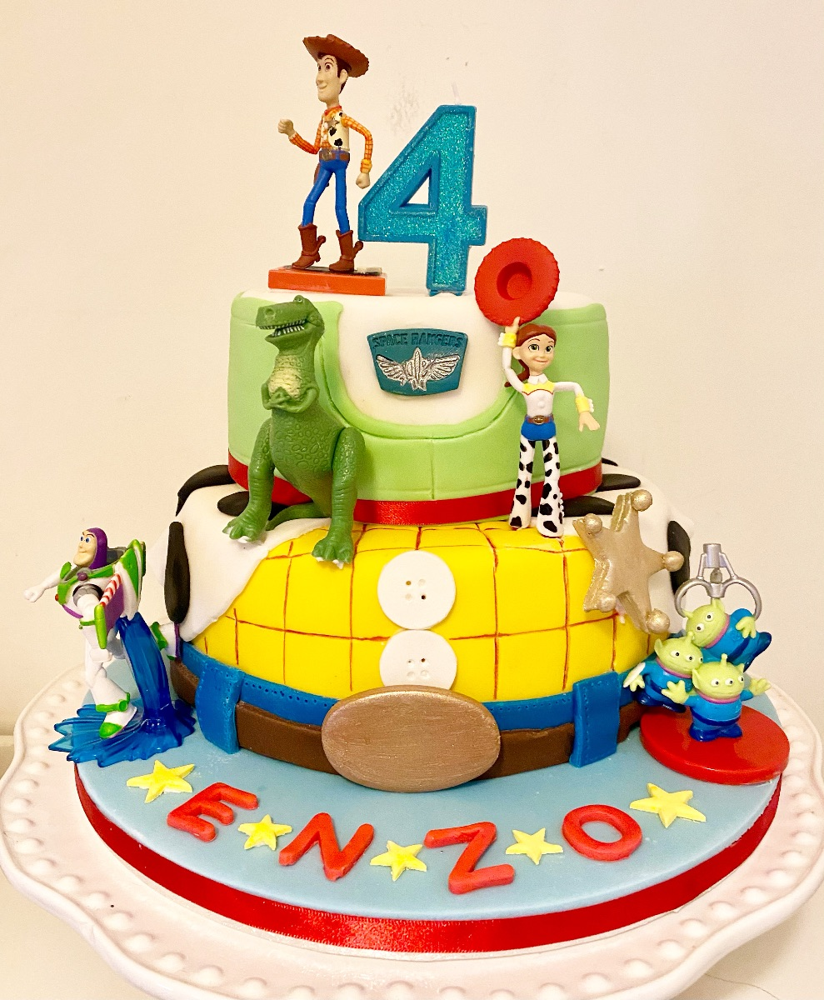
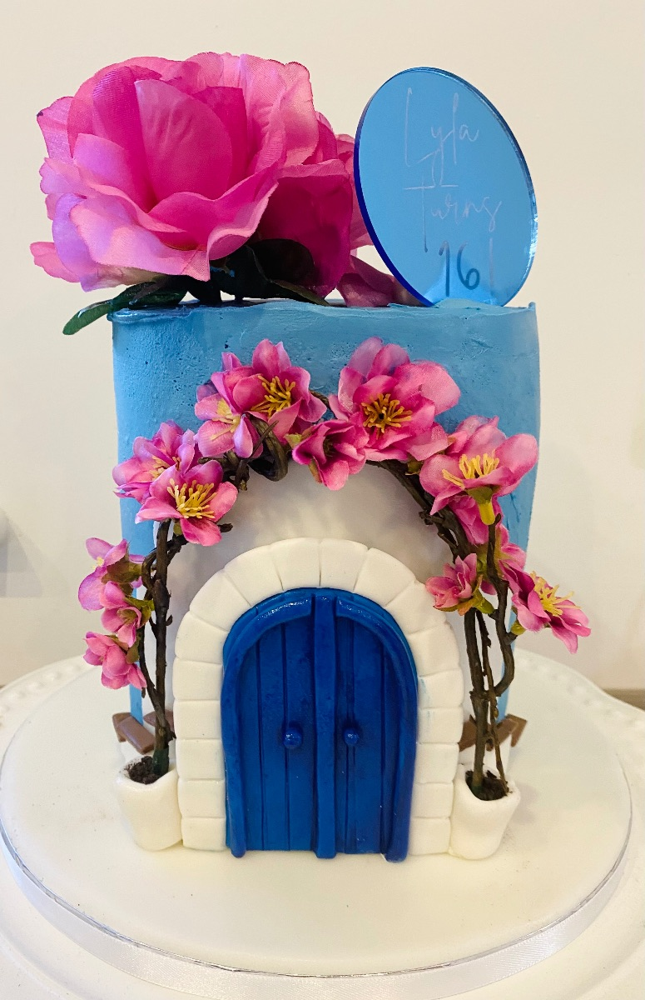
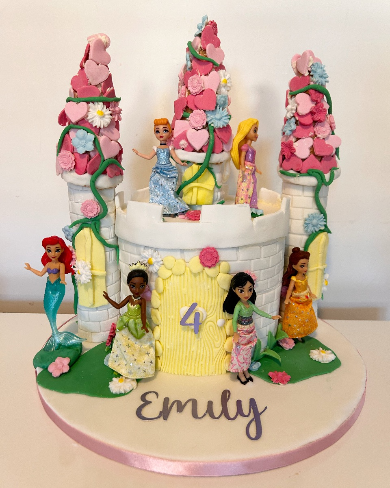
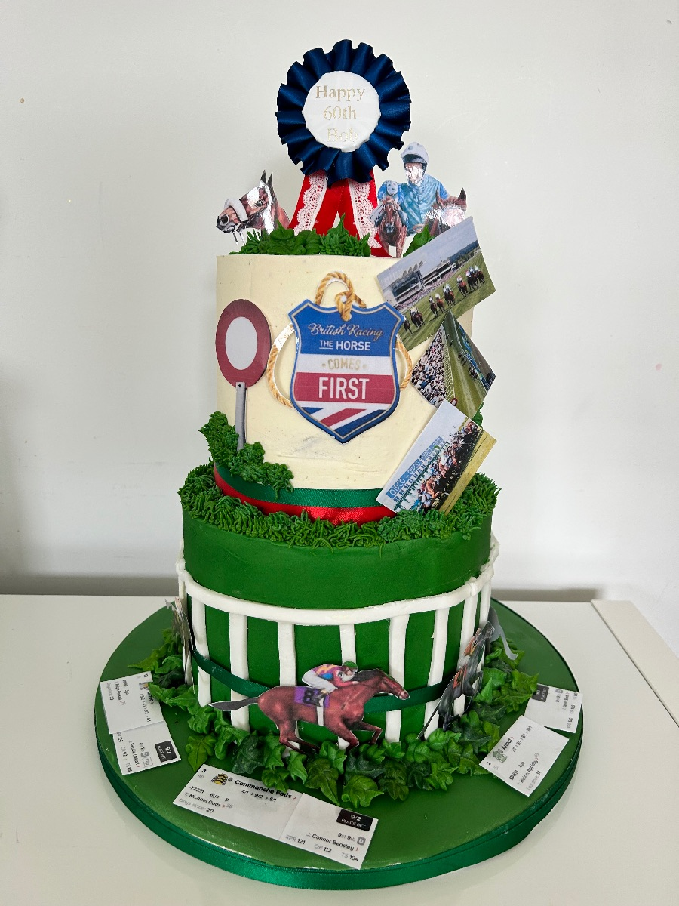
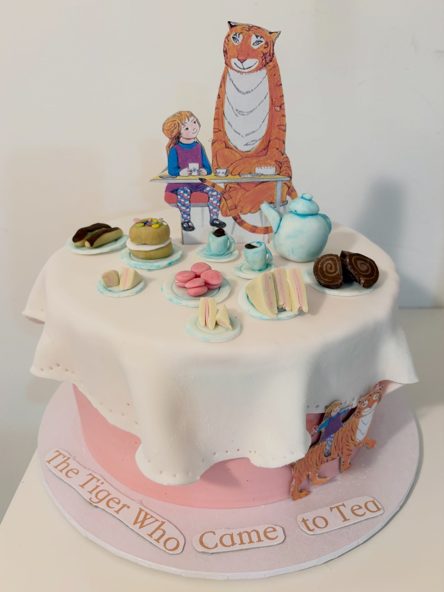
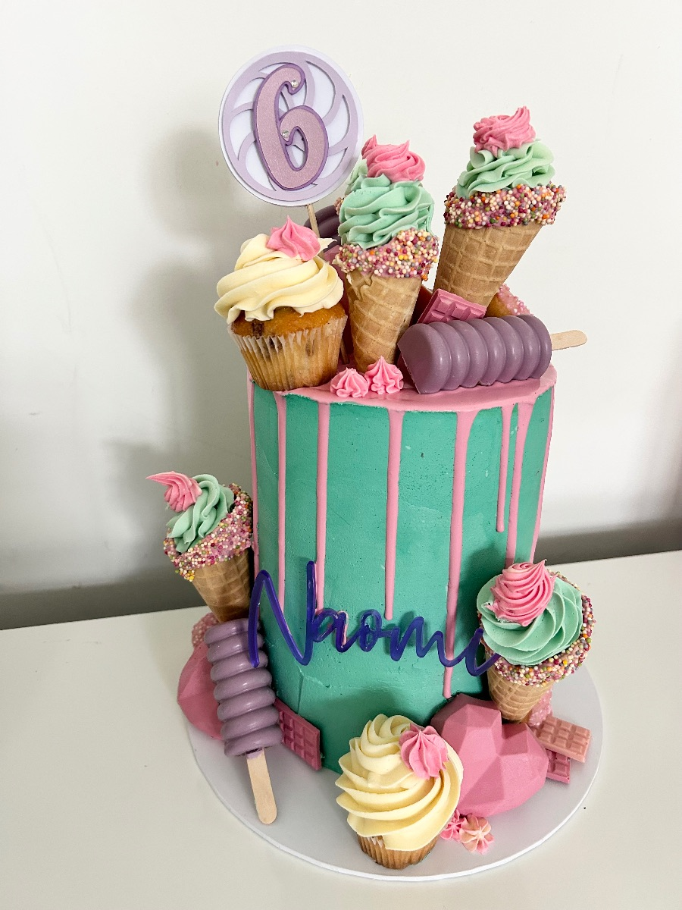
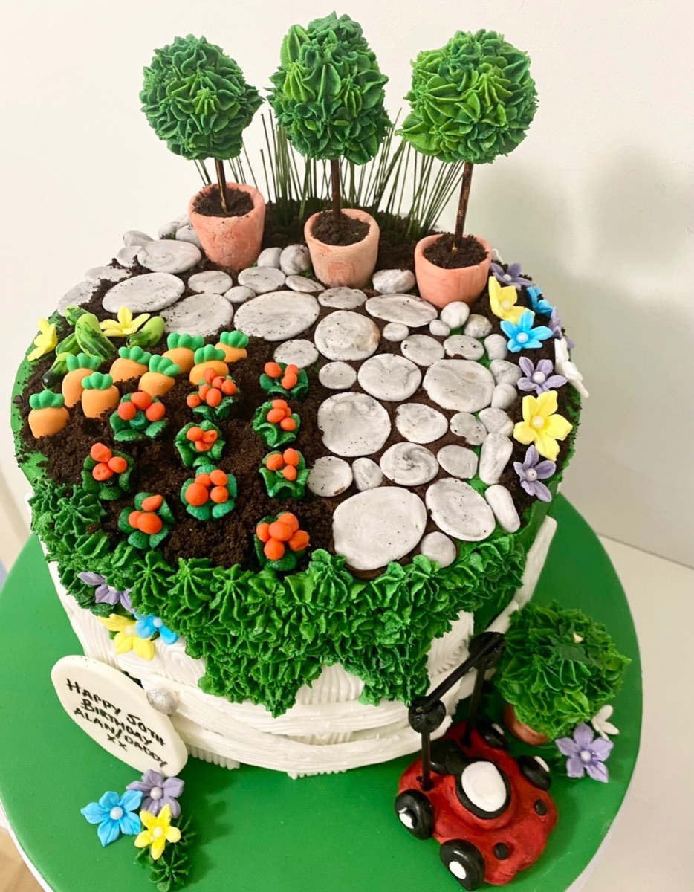
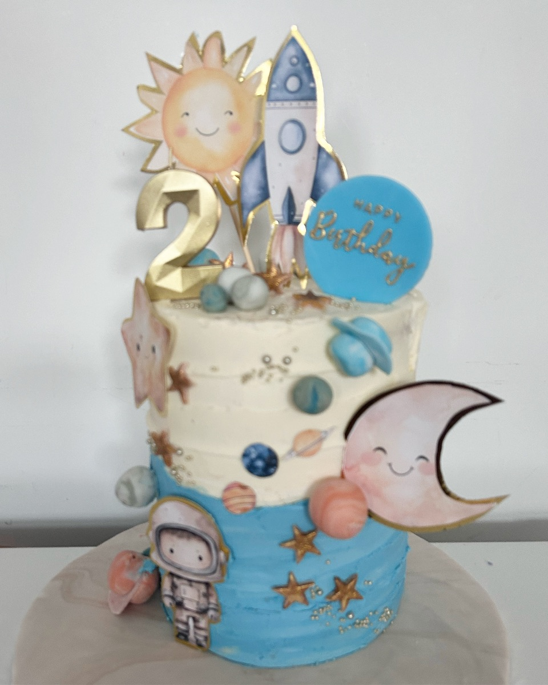
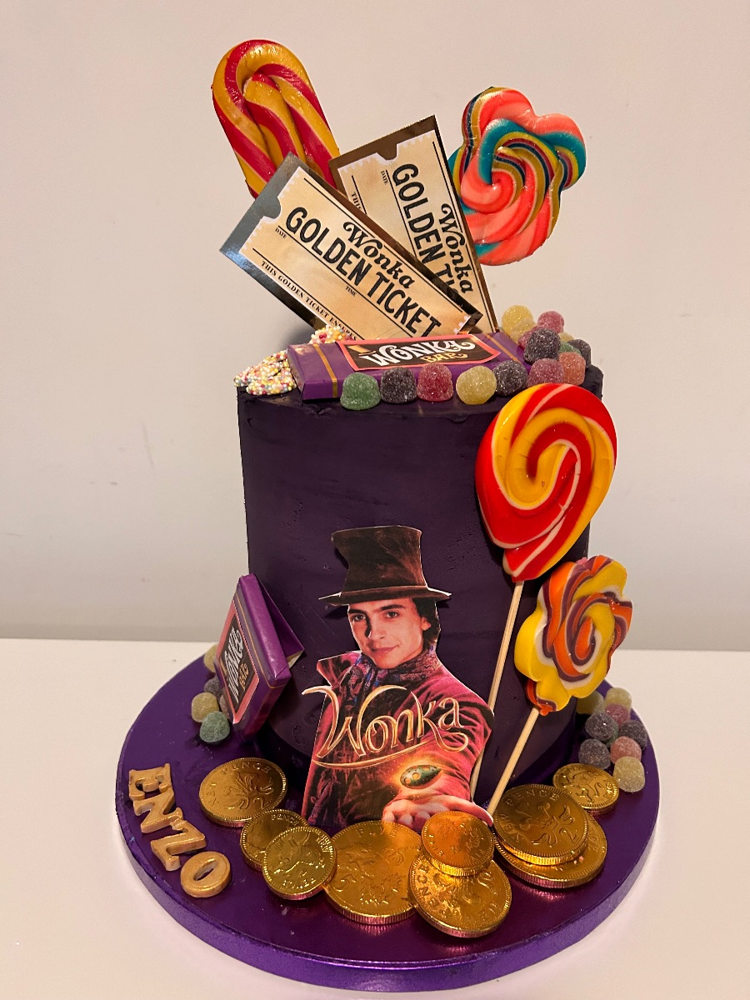

Made to order
Bespoke Cakes
A cake that is custom-designed and made to your specific requirements — especially for your special occasion.

Send through some images of the designs you like and we'll work with you to create your bespoke cake. Tell us how many people you need it to feed and we'll come back with the right quote.










What can be personalised
Made your way.
A bespoke cake can be personalised in many ways. We work with you on the details so the cake feels like it belongs to the occasion.
- Size & shape — 6, 8 or 10 inch · round, square or tiered Custom
- Design & theme — built around the occasion Custom
- Colours, flowers, characters & logos — match the brief Custom
- Personalised messages — names, birthdays, anniversaries Custom
- Dietary needs — gluten-free, vegan, nut-free, dairy-free GF · DF · V · NF
Latest trend
Vintage piped Lambeth.
Vintage-style Lambeth cakes are having a moment. Choose from a single heart, tiered heart, circle, square or rectangle — piped with intricate buttercream swirls and edged piping for that classic vintage feel. We can add bows, cherries and a name or message in the centre.
Indicative Lambeth tiers and pricing are listed on the wedding cakes page; bespoke orders are quoted to the design.
Decoration
Fresh flowers, edible icing, and the rest.
We work with food-safe fresh flowers, plus artificial and dried flowers. Edible icing sheets wrap whole cakes for printed designs. Small toys, sugar-paste figures and mounted photographs can sit on the cake as decoration — whatever the occasion calls for.


How a bespoke cake comes together
From idea to finished cake.
Send your inspiration
Email or message a few images of designs you love. Tell us the occasion, date and rough numbers.
We design together
Helen comes back with a sketch and a clear quote. Numbers, dietary needs, flavours and finish all confirmed before deposit.
Cake made & delivered
Helen bakes, decorates and delivers (or arranges collection) in Chelmsford and across Essex. Pickups by appointment.
Start a bespoke conversation
Let's design your bespoke cake.
07939 618787 · Mon–Fri 9am–5pm · Sat 9am–12pm · Replies within a day
Start an enquiry